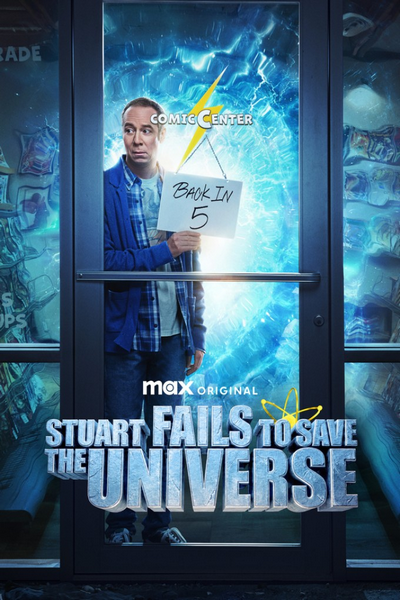

COMÉDIA · FICÇÃO CIENTÍFICA · AVENTURA
Stuart Fails to Save the Universe
Depois de quebrar um dispositivo de interferência quântica criado por Sheldon e Leonard, Stuart Bloom provoca um Armagedom multiversal. Ao lado de Denise, Bert e Barry Kripke, ele precisa restaurar a realidade.
0 de 10 episódios assistidos
O MULTIVERSO ESTÁ EM PERIGO
Temporada e episódios
Episódios bloqueados
Adicione a série para marcar o que já assistiu e ganhar XP.